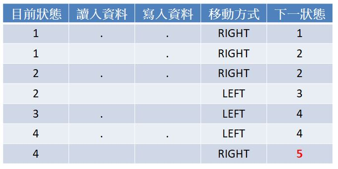
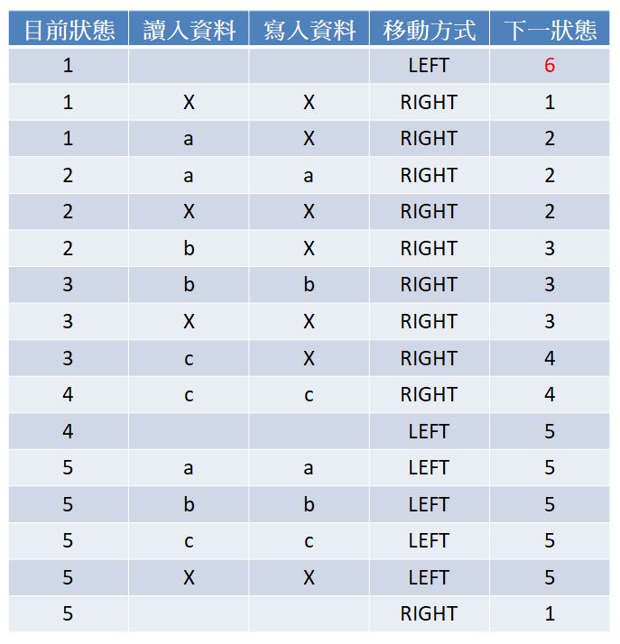

通用機器
December 16, 2021想要實作加法器，首先要想一下磁帶上的資料如何能表示數字，使用二進位雖然是一個方式，不過規則數量會比較多。
特定機器的規則
若單純只是想要有加法運算，不考慮與其他特定機器合作的共通性，那就來數數吧！一個 . 表示 1，.. 表示 2，... 表示 3。
如此一來，3 + 4 樣的操作，只要在磁帶上寫入 ... ....，然後想辦法去掉空白，將空白後的 . 往前移，最後得到 .......，就表示結果 7 了。
你可以如同先前文件那樣，畫出流程狀態圖，好處是易於觀察狀態走向，之前也用過的另一方式是列點描述，好處是人類易讀，若要方便檢索「目前狀態」、「讀入符號」、「寫入符號」、「移動方式」、「下一狀態」，那表格也可以是一種選擇。
若磁頭一開始是在最左邊的 .，運算完後也是停在最左邊的 .，加法器的規則以表格方式來呈現的話會是（紅色是接受狀態）：

若是想要比對特定字串，例如，看看字串是否為 a 字元後跟著相同數量的 b，之後又跟著相同數量的 c（例如 abc、aabbcc、aaabbbccc 等），可以運用消去的方式，例如 aabbcc，一開始磁頭在最左邊的字元，比對完畢後磁頭位於最右邊的字元，第一次機由左往右以 X 消去字元得到 XaXbXc，之後再度由左往右消去字元得到 XXXXXX，若最後磁帶上全部都是 X，就表示字串符合格式。
若不考慮將磁頭移回資料最左方，那麼執行上述運算的字串比對器，以以表格方式來呈現的話會是（紅色是接受狀態）：

你可以按照規則，使用〈特定機器〉中的程式建立 Rule 實例與起始的 Head 實例，運行看看是否可正確地比對字串。
圖靈完備性
雖說特定運算用途的機器功能有限，然而，若有耐心，可以為現代常見的運算都打造出一台特定機器，特定機器之間有著一定的資料格式，然後把這些機器結合起來，並且制訂一組專用規則，可以在某狀態讀入某符號時，轉移至特定功能機器上，這組專用的規則，就成了一台通用機器，若運用這組專用規則撰寫出操作機器的一串指令，這串指令就可以將通用機器模擬為特定用途機器。
「目前狀態」、「讀入符號」、「寫入符號」、「移動方式」、「下一狀態」這樣制訂規則的格式，實際上是由艾倫·麥席森·圖靈（Alan Mathison Turing）觀察提出，先前的特定用途機器，就是圖靈機（Turing Machine），而方才所述及的通用機器，就是通用圖靈機（Universal Turing Machine）。
之前談過的 Brainfuck，是個具有移動磁帶、讀寫磁帶概念的機器，它用的符號 +-><[].,，各個都有對應的實現，它就是個通用圖靈機，可以用來模擬任何圖靈機，〈空想 Brainfuck〉中也談過，Brainfuck 也是一門程式語言。
程式語言若可用來模擬任何圖靈機，該語言是通用圖靈機，或稱該語言具有圖靈完備性（Turing completeness）
圖靈完備的程式語言是一台通用圖靈機，而使用該語言寫出來的程式，都相當於打造了一台特定用途圖靈機，因為它只能按照程式碼制訂的規則運算，識別特定的輸入、進行特定的輸出，不在規則內的話，機器如何卡住就看各程式語言的環境如何規範了。
每個程式都是一台特定用途圖靈機，按照程式碼制訂的規則進行運算，這規則就是演算法了，在畫圖靈機的流程圖時，不覺得它就像是演算法的流程圖嗎？在圖靈機的術語裏，那些狀態流程圖稱為組態圖（Configuration graph）。
現代電腦十分強大，可以在上頭安裝作業系統、各式各樣的程式，也就是說，現代電腦也是一台通用圖靈機，上頭模擬了各式各樣的圖靈機，而有些還模擬了識別特定符號的通用圖靈機，像是 JVM、Node.js，甚至是瀏覽器中的 JavaScript 執行環境等。
觀察運算
為什麼制訂規則的格式，會是「目前狀態」、「讀入符號」、「寫入符號」、「移動方式」、「下一狀態」呢？圖靈先生在 1930 年代觀察人力運算者，如何以人手重複進行數學運算，希望從中尋找一種方式來描述人力運算者的動作，以便重複性的運算工作，可以由機器來執行。
這類對運算的描述稱為規則，希望能簡單到不能再分割，規則格式是來自真實的人力運算者，運算者目前的心智狀態、眼睛觀察到的符號，決定了接下來運算的執行方式，在紙帶寫下的執行結果（符號）以及新的心智狀態，因而才有了「目前狀態」、「讀入符號」、「寫入符號」、「移動方式」、「下一狀態」的規則格式。
你也可以稱「目前狀態」、「讀入符號」、「寫入符號」、「移動方式」、「下一狀態」是由來制訂規則的規則，就如同〈誰是微語言？〉談到的，lambda 表示式可以構造出完整的演算，完整的演算就相當於一台圖靈機，完整演算中每個 lambda 表示式就相當於構造圖靈機的規則，而構造 lambda 表示式最簡形式的三條語法規則，就相當於構造圖靈機規則時的那五個元素。